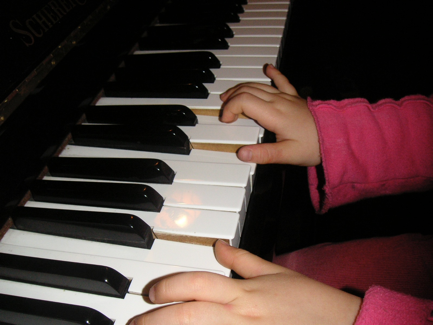
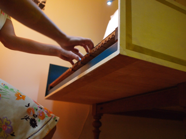
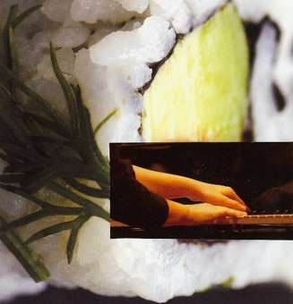

En pratiquant un instrument, on travaille ses capacités d'attention et de concentration
J'enseigne le piano et le clavecin en cours particuliers sur Paris, à tout public, tous niveaux dès 7 ans sans aucune limite d'âge, dans le respect du rythme et des goûts de chacun : le répertoire joué est le vôtre.

Le clavecin et le piano peuvent être débutés à n'importe quelle période de la vie y compris celle de la retraite où l'on dispose parfois d'un temps nouveau pour réaliser des rêves anciens. Sans compter que la pratique d'un instrument est excellente pour notre cerveau, nos articulations, l'indépendance de nos mains et de nos doigts et aussi pour notre état intérieur et émotionnel

En pratiquant un instrument, on travaille ses capacités d'attention et de concentration. Chaque moment passé à pratiquer, comme en sophrologie ou méditation, est un moment où l'on est pleinement présent à soi. Nous sommes ici et maintenant focalisés sur la lecture dans les deux clés de notre partition, de ses codes, notes, altérations, rythmes, phrasés, nuances, doigtés et la réalisation sur le clavier ensuite. Tous nos sens sont en éveil, notre attention est à son comble.

LIEUX :
- Paris 12 - métro Ledru Rollin
- A domicile dans le quartier Ledru-Rollin